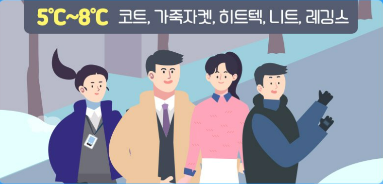
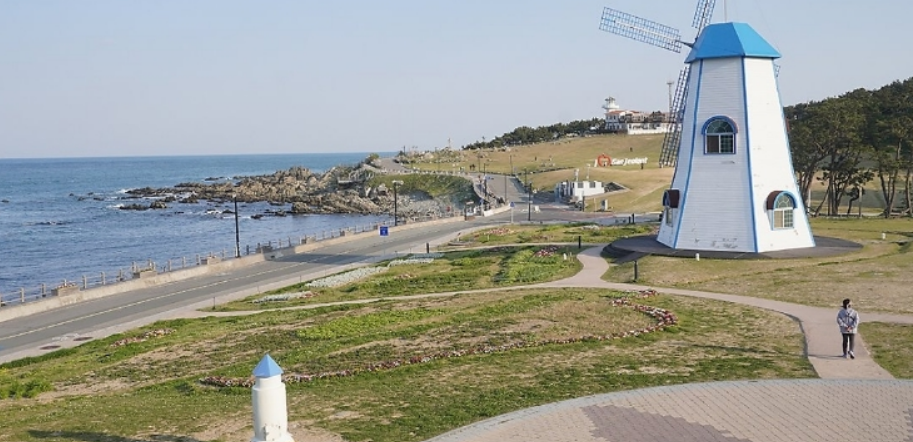
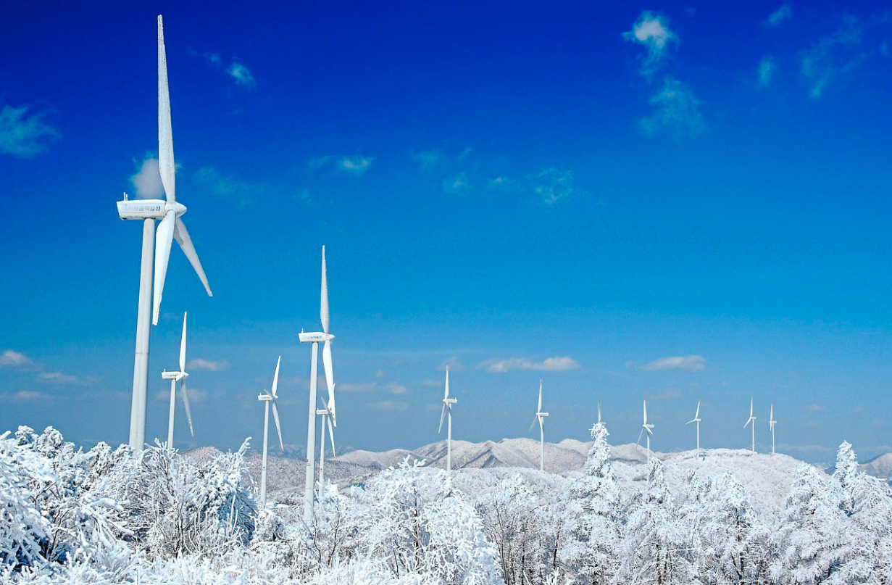

5도~8도
울 코트, 히트텍, 가죽 옷, 기모

가을에서 겨울로 넘어가는 시기이기 때문에 제법 춥습니다
겨울 코트나 두툼한 소재의 아우터, 목폴라 정도 입기 좋습니다
추위를 타시는 분이면 히트택이나 내복을 입어
체온을 유지를 하셔도 좋습니다.
추천 여행지
 
1.울산 간절곶 (울산광역시 울주군 서생면 대송리) 2.강원도 대관령 하늘 목장 설경 (강원 평창군 대관령면 꽃밭양지길)